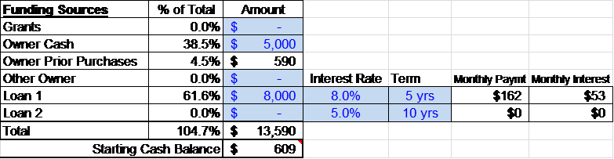

Section 4 ? Funding Sources
The last part of the equation is deciding where you will get the money to cover your startup and other costs. This will depend on your ability to borrow money from the bank, qualify for grants, attract investors or contribute assets and other items to the business.
You can use the bottom part of the funding worksheet to play what-if scenarios comparing adding money of your own, borrowing, taking on an investor or obtaining funds from grants.

Most banks will give you a range of interest rates and loan terms to provide guidance on loan options. Private investors are much more difficult to find and make deals with, so engage a qualified individual to help navigate that process.
The column titled "% of Total" indicates what percentage of the total amount needed is contributed by each funding source. Almost always you as the owner will be expected to contribute some cash to the business – normally 10 to 30%.
Review the funding plan and adjust until you have a positive "Starting Cash Balance" at the bottom.